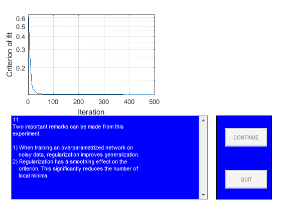

close all
StopDemo=0;
figure
guihand=gcf;
for k=1:1,
[guihand,edmulti,contbut,quitbut]=pmnshow;
set(guihand,'Name','Demonstration of regularization');
s0='1';
s1='In this demo it is shown how regularization by simple';
s2='weight decay might be of help when dealing with';
s3='overparametrization in neural networks.';
s4=[];
s5='The problem, which will be the subject of our';
s6='investigation, is to use a neural network for fitting';
s7='the underlying sine wave from the points marked';
s8='''training data.''';
smat=str2mat(s0,s1,s2,s3,s4,s5,s6,s7,s8);
load('dataSetofSpam.mat');
PHI1=trainData;
Y1=trainlabel;
PHI2=testData;
Y2=testlabel;
PHI1=PHI1';
PHI2=PHI2';
Y1=Y1';
Y2=Y2';
sub1=subplot('position',[0.1 0.55 0.38 0.38]);
plot(PHI1,Y1,'+');
set(gca,'Xlim',[min(PHI1(:)) max(PHI1(:))]);
title('Training data');
sub2=subplot('position',[0.57 0.55 0.38 0.38]);
plot(PHI2,Y2,'m+')
set(gca,'Xlim',[min(PHI2(:)) max(PHI2(:))]);
title('Test data');
drawnow
if StopDemo==1, close all, break; end
s0='2';
s1='Let''s begin by training a network with 15';
s2='hidden ''tanh'' units and one linear output unit';
s3='without using regularization.';
smat=str2mat(s0,s1,s2,s3);
NetDef = ['HHHHHHHHHHHHHHHHHHHH'
'L-------------------'];
W1 = rand(20,8);
W2 = rand(1,21);
delete(sub1);
delete(sub2);
sub1=subplot('position',[0.1 0.55 0.45 0.38]);
pmnshow(smat,guihand,edmulti,contbut,quitbut);
if StopDemo==1, close all, break; end
s0='3';
s1=[];
s2=' >> Training process in action!! <<';
s3=[];
s4=[];
s5='We run up to 500 iterations so you may have to';
s6='wait for a while!';
smat=str2mat(s0,s1,s2,s3,s4,s5,s6);
set(edmulti,'String',smat);
drawnow
trparms = settrain;
trparms = settrain(trparms,'maxiter',500);
[W1,W2,NSSEvec,iter,lambda2]=marq(NetDef,W1,W2,PHI1,Y1,trparms);
delete(gca);
subplot('position',[0.1 0.55 0.45 0.38]);
semilogy(NSSEvec);
xlabel('Iteration');
ylabel('Criterion of fit');
grid
s0='4';
s1='Next we compute training error, test error,';
s2='FPE estimate, and LOO estimate to get an idea';
s3='of how well the network fits the curve.';
smat=str2mat(s0,s1,s2,s3);
pmnshow(smat,guihand,edmulti,contbut,quitbut);
if StopDemo==1, close all, break; end
[Yhat,E,NSSE_tr] = nneval(NetDef,W1,W2,PHI1,Y1,1);
[Yhat,E,NSSE_te] = nneval(NetDef,W1,W2,PHI2,Y2,1);
FPE = fpe(NetDef,W1,W2,PHI1,Y1,trparms);
trparms2 = settrain(trparms,'maxiter',0);
ELOO= loo(NetDef,W1,W2,PHI1,Y1,trparms2);
s0='5';
s1=['Training error: ' num2str(NSSE_tr)];
s2=['Test Error: ' num2str(NSSE_te)];
s3=['FPE estimate: ' num2str(FPE)];
s4=['LOO estimate: ' num2str(ELOO)];
smat=str2mat(s0,s1,s2,s3,s4);
pmnshow(smat,guihand,edmulti,contbut,quitbut);
if StopDemo==1, close all, break; end
s0='6';
s1='This result is typical for networks having too many';
s2='weights. The superflous weights will capture';
s3='some of the noise on the training set, leading to';
s4='a poor generalization ability. This phenomenon is';
s5='usually referred to as ''overfitting''';
s6=[];
s7='Let''s try to train with a small weight decay (0.02)';
s8='and see what happens.';
smat=str2mat(s0,s1,s2,s3,s4,s5,s6,s7,s8);
pmnshow(smat,guihand,edmulti,contbut,quitbut);
if StopDemo==1, close all, break; end
s0='7';
s1=[];
s2=' >> Training process in action!! <<';
s3=[];
s4=[];
s5='We run up to 500 iterations so you may have to';
s6='wait for a while!';
smat=str2mat(s0,s1,s2,s3,s4,s5,s6);
set(edmulti,'String',smat);
drawnow
trparms = settrain(trparms,'D',0.02);
[W1,W2,NSSEvec,iter,lambda2]=marq(NetDef,W1,W2,PHI1,Y1,trparms);
delete(gca);
subplot('position',[0.1 0.55 0.45 0.38]);
semilogy(NSSEvec);
xlabel('Iteration');
ylabel('Criterion of fit');
grid
[Yhat,E,NSSE_tr2] = nneval(NetDef,W1,W2,PHI1,Y1,1);
[Yhat,E,NSSE_te2] = nneval(NetDef,W1,W2,PHI2,Y2,1);
trparms2 = settrain(trparms,'maxiter',0);
s0='8';
s1=' No regularization Regularization';
s2=['Training error: ' num2str(NSSE_tr) ' ' num2str(NSSE_tr2) ];
s3=['Test Error: ' num2str(NSSE_te) ' ' num2str(NSSE_te2)];
s6=[];
s7='It looks as if the weight decay actually improved';
s8='generalization.';
smat=str2mat(s0,s1,s2,s3,s4,s5,s6,s7,s8);
pmnshow(smat,guihand,edmulti,contbut,quitbut);
if StopDemo==1, close all, break; end
s0='9';
s1='To really proof the effect of regularization, we';
s2='redo the experiment for 50 different values of the';
s3='weight decay parameter. Also we train the network';
s4='7 times for each weight decay, using different initial';
s5='weights in order to reduce the influence from local';
s6='minima.';
smat=str2mat(s0,s1,s2,s3,s4,s5,s6);
pmnshow(smat,guihand,edmulti,contbut,quitbut);
if StopDemo==1, close all, break; end
s0='11';
s1='Two important remarks can be made from this';
s2='experiment:';
s25=[];
s3='1) When training an overparametrized network on';
s4=' noisy data, regularization improves generalization.';
s5='2) Regularization has a smoothing effect on the';
s6=' criterion. This significantly reduces the number of';
s7=' local minima.';
smat=str2mat(s0,s1,s2,s25,s3,s4,s5,s6,s7);
set(edmulti,'String',smat);
drawnow
TestatingData=PHI2;
save('TestatingData.mat','TestatingData');
save('modelEvaluation.mat','NetDef','PHI1','PHI2','W1','W2','Y1','Y2');
end
Network training started at 17.44.42
iteration # 1 W = 1.233e+00iteration # 2 W = 9.407e-01iteration # 3 W = 2.040e-01iteration # 4 W = 1.129e-01iteration # 5 W = 1.118e-01iteration # 6 W = 1.118e-01iteration # 7 W = 1.118e-01iteration # 8 W = 1.118e-01iteration # 9 W = 1.118e-01iteration # 10 W = 1.118e-01iteration # 11 W = 1.117e-01iteration # 12 W = 1.117e-01iteration # 13 W = 1.117e-01iteration # 14 W = 1.117e-01iteration # 15 W = 1.116e-01iteration # 16 W = 1.116e-01iteration # 17 W = 1.115e-01iteration # 18 W = 1.115e-01iteration # 19 W = 1.110e-01iteration # 20 W = 1.108e-01iteration # 21 W = 1.103e-01iteration # 22 W = 1.101e-01iteration # 23 W = 1.095e-01iteration # 24 W = 1.087e-01iteration # 25 W = 1.086e-01iteration # 26 W = 1.083e-01iteration # 27 W = 1.080e-01iteration # 28 W = 1.075e-01iteration # 29 W = 1.075e-01iteration # 30 W = 1.073e-01iteration # 31 W = 1.071e-01iteration # 32 W = 1.066e-01iteration # 33 W = 1.062e-01iteration # 34 W = 1.060e-01iteration # 35 W = 1.057e-01iteration # 36 W = 1.056e-01iteration # 37 W = 1.054e-01iteration # 38 W = 1.051e-01iteration # 39 W = 1.048e-01iteration # 40 W = 1.046e-01iteration # 41 W = 1.045e-01iteration # 42 W = 1.044e-01iteration # 43 W = 1.044e-01iteration # 44 W = 1.043e-01iteration # 45 W = 1.043e-01iteration # 46 W = 1.042e-01iteration # 47 W = 1.041e-01iteration # 48 W = 1.041e-01iteration # 49 W = 1.040e-01iteration # 50 W = 1.038e-01iteration # 51 W = 1.038e-01iteration # 52 W = 1.037e-01iteration # 53 W = 1.035e-01iteration # 54 W = 1.035e-01iteration # 55 W = 1.034e-01iteration # 56 W = 1.034e-01iteration # 57 W = 1.033e-01iteration # 58 W = 1.033e-01iteration # 59 W = 1.033e-01iteration # 60 W = 1.032e-01iteration # 61 W = 1.032e-01iteration # 62 W = 1.032e-01iteration # 63 W = 1.031e-01iteration # 64 W = 1.031e-01iteration # 65 W = 1.030e-01iteration # 66 W = 1.029e-01iteration # 67 W = 1.029e-01iteration # 68 W = 1.028e-01iteration # 69 W = 1.028e-01iteration # 70 W = 1.027e-01iteration # 71 W = 1.026e-01iteration # 72 W = 1.026e-01iteration # 73 W = 1.025e-01iteration # 74 W = 1.025e-01iteration # 75 W = 1.025e-01iteration # 76 W = 1.025e-01iteration # 77 W = 1.025e-01iteration # 78 W = 1.025e-01iteration # 79 W = 1.024e-01iteration # 80 W = 1.024e-01iteration # 81 W = 1.024e-01iteration # 82 W = 1.024e-01iteration # 83 W = 1.023e-01iteration # 84 W = 1.023e-01iteration # 85 W = 1.023e-01iteration # 86 W = 1.023e-01iteration # 87 W = 1.023e-01iteration # 88 W = 1.022e-01iteration # 89 W = 1.022e-01iteration # 90 W = 1.021e-01iteration # 91 W = 1.021e-01iteration # 92 W = 1.021e-01iteration # 93 W = 1.020e-01iteration # 94 W = 1.020e-01iteration # 95 W = 1.019e-01iteration # 96 W = 1.019e-01iteration # 97 W = 1.019e-01iteration # 98 W = 1.018e-01iteration # 99 W = 1.018e-01iteration # 100 W = 1.017e-01iteration # 101 W = 1.017e-01iteration # 102 W = 1.016e-01iteration # 103 W = 1.016e-01iteration # 104 W = 1.016e-01iteration # 105 W = 1.015e-01iteration # 106 W = 1.014e-01iteration # 107 W = 1.014e-01iteration # 108 W = 1.013e-01iteration # 109 W = 1.012e-01iteration # 110 W = 1.012e-01iteration # 111 W = 1.011e-01iteration # 112 W = 1.011e-01iteration # 113 W = 1.009e-01iteration # 114 W = 1.008e-01iteration # 115 W = 1.007e-01iteration # 116 W = 1.006e-01iteration # 117 W = 1.003e-01iteration # 118 W = 1.002e-01iteration # 119 W = 1.001e-01iteration # 120 W = 9.999e-02iteration # 121 W = 9.987e-02iteration # 122 W = 9.979e-02iteration # 123 W = 9.967e-02iteration # 124 W = 9.966e-02iteration # 125 W = 9.949e-02iteration # 126 W = 9.944e-02iteration # 127 W = 9.933e-02iteration # 128 W = 9.922e-02iteration # 129 W = 9.901e-02iteration # 130 W = 9.889e-02iteration # 131 W = 9.870e-02iteration # 132 W = 9.858e-02iteration # 133 W = 9.850e-02iteration # 134 W = 9.846e-02iteration # 135 W = 9.840e-02iteration # 136 W = 9.838e-02iteration # 137 W = 9.836e-02iteration # 138 W = 9.835e-02iteration # 139 W = 9.832e-02iteration # 140 W = 9.830e-02iteration # 141 W = 9.828e-02iteration # 142 W = 9.826e-02iteration # 143 W = 9.825e-02iteration # 144 W = 9.823e-02iteration # 145 W = 9.821e-02iteration # 146 W = 9.820e-02iteration # 147 W = 9.818e-02iteration # 148 W = 9.817e-02iteration # 149 W = 9.815e-02iteration # 150 W = 9.813e-02iteration # 151 W = 9.812e-02iteration # 152 W = 9.810e-02iteration # 153 W = 9.809e-02iteration # 154 W = 9.804e-02iteration # 155 W = 9.802e-02iteration # 156 W = 9.801e-02iteration # 157 W = 9.789e-02iteration # 158 W = 9.786e-02iteration # 159 W = 9.781e-02iteration # 160 W = 9.777e-02iteration # 161 W = 9.773e-02iteration # 162 W = 9.768e-02iteration # 163 W = 9.763e-02iteration # 164 W = 9.757e-02iteration # 165 W = 9.749e-02iteration # 166 W = 9.742e-02iteration # 167 W = 9.740e-02iteration # 168 W = 9.729e-02iteration # 169 W = 9.723e-02iteration # 170 W = 9.721e-02iteration # 171 W = 9.718e-02iteration # 172 W = 9.716e-02iteration # 173 W = 9.714e-02iteration # 174 W = 9.712e-02iteration # 175 W = 9.710e-02iteration # 176 W = 9.707e-02iteration # 177 W = 9.705e-02iteration # 178 W = 9.703e-02iteration # 179 W = 9.701e-02iteration # 180 W = 9.699e-02iteration # 181 W = 9.697e-02iteration # 182 W = 9.695e-02iteration # 183 W = 9.693e-02iteration # 184 W = 9.691e-02iteration # 185 W = 9.689e-02iteration # 186 W = 9.687e-02iteration # 187 W = 9.685e-02iteration # 188 W = 9.679e-02iteration # 189 W = 9.673e-02iteration # 190 W = 9.672e-02iteration # 191 W = 9.654e-02iteration # 192 W = 9.642e-02iteration # 193 W = 9.621e-02iteration # 194 W = 9.615e-02iteration # 195 W = 9.588e-02iteration # 196 W = 9.560e-02iteration # 197 W = 9.540e-02iteration # 198 W = 9.512e-02iteration # 199 W = 9.491e-02iteration # 200 W = 9.457e-02iteration # 201 W = 9.449e-02iteration # 202 W = 9.444e-02iteration # 203 W = 9.441e-02iteration # 204 W = 9.431e-02iteration # 205 W = 9.430e-02iteration # 206 W = 9.429e-02iteration # 207 W = 9.427e-02iteration # 208 W = 9.426e-02iteration # 209 W = 9.425e-02iteration # 210 W = 9.423e-02iteration # 211 W = 9.422e-02iteration # 212 W = 9.420e-02iteration # 213 W = 9.418e-02iteration # 214 W = 9.416e-02iteration # 215 W = 9.415e-02iteration # 216 W = 9.415e-02iteration # 217 W = 9.411e-02iteration # 218 W = 9.409e-02iteration # 219 W = 9.405e-02iteration # 220 W = 9.403e-02iteration # 221 W = 9.401e-02iteration # 222 W = 9.398e-02iteration # 223 W = 9.395e-02iteration # 224 W = 9.392e-02iteration # 225 W = 9.389e-02iteration # 226 W = 9.385e-02iteration # 227 W = 9.380e-02iteration # 228 W = 9.376e-02iteration # 229 W = 9.369e-02iteration # 230 W = 9.361e-02iteration # 231 W = 9.354e-02iteration # 232 W = 9.346e-02iteration # 233 W = 9.345e-02iteration # 234 W = 9.327e-02iteration # 235 W = 9.321e-02iteration # 236 W = 9.315e-02iteration # 237 W = 9.309e-02iteration # 238 W = 9.304e-02iteration # 239 W = 9.302e-02iteration # 240 W = 9.288e-02iteration # 241 W = 9.280e-02iteration # 242 W = 9.271e-02iteration # 243 W = 9.260e-02iteration # 244 W = 9.254e-02iteration # 245 W = 9.250e-02iteration # 246 W = 9.246e-02iteration # 247 W = 9.243e-02iteration # 248 W = 9.239e-02iteration # 249 W = 9.236e-02iteration # 250 W = 9.232e-02iteration # 251 W = 9.229e-02iteration # 252 W = 9.225e-02iteration # 253 W = 9.224e-02iteration # 254 W = 9.215e-02iteration # 255 W = 9.211e-02iteration # 256 W = 9.206e-02iteration # 257 W = 9.201e-02iteration # 258 W = 9.196e-02iteration # 259 W = 9.190e-02iteration # 260 W = 9.183e-02iteration # 261 W = 9.178e-02iteration # 262 W = 9.173e-02iteration # 263 W = 9.171e-02iteration # 264 W = 9.167e-02iteration # 265 W = 9.166e-02iteration # 266 W = 9.164e-02iteration # 267 W = 9.163e-02iteration # 268 W = 9.161e-02iteration # 269 W = 9.160e-02iteration # 270 W = 9.158e-02iteration # 271 W = 9.157e-02iteration # 272 W = 9.155e-02iteration # 273 W = 9.154e-02iteration # 274 W = 9.153e-02iteration # 275 W = 9.151e-02iteration # 276 W = 9.150e-02iteration # 277 W = 9.148e-02iteration # 278 W = 9.147e-02iteration # 279 W = 9.146e-02iteration # 280 W = 9.145e-02iteration # 281 W = 9.143e-02iteration # 282 W = 9.143e-02iteration # 283 W = 9.141e-02iteration # 284 W = 9.141e-02iteration # 285 W = 9.140e-02iteration # 286 W = 9.140e-02iteration # 287 W = 9.140e-02iteration # 288 W = 9.138e-02iteration # 289 W = 9.138e-02iteration # 290 W = 9.138e-02iteration # 291 W = 9.137e-02iteration # 292 W = 9.137e-02iteration # 293 W = 9.137e-02iteration # 294 W = 9.137e-02iteration # 295 W = 9.136e-02iteration # 296 W = 9.136e-02iteration # 297 W = 9.135e-02iteration # 298 W = 9.135e-02iteration # 299 W = 9.135e-02iteration # 300 W = 9.134e-02iteration # 301 W = 9.134e-02iteration # 302 W = 9.134e-02iteration # 303 W = 9.133e-02iteration # 304 W = 9.133e-02iteration # 305 W = 9.132e-02iteration # 306 W = 9.131e-02iteration # 307 W = 9.129e-02iteration # 308 W = 9.127e-02iteration # 309 W = 9.125e-02iteration # 310 W = 9.125e-02iteration # 311 W = 9.121e-02iteration # 312 W = 9.120e-02iteration # 313 W = 9.119e-02iteration # 314 W = 9.119e-02iteration # 315 W = 9.118e-02iteration # 316 W = 9.117e-02iteration # 317 W = 9.116e-02iteration # 318 W = 9.115e-02iteration # 319 W = 9.114e-02iteration # 320 W = 9.113e-02iteration # 321 W = 9.112e-02iteration # 322 W = 9.111e-02iteration # 323 W = 9.110e-02iteration # 324 W = 9.109e-02iteration # 325 W = 9.109e-02iteration # 326 W = 9.107e-02iteration # 327 W = 9.105e-02iteration # 328 W = 9.103e-02iteration # 329 W = 9.101e-02iteration # 330 W = 9.099e-02iteration # 331 W = 9.099e-02iteration # 332 W = 9.095e-02iteration # 333 W = 9.093e-02iteration # 334 W = 9.092e-02iteration # 335 W = 9.086e-02iteration # 336 W = 9.084e-02iteration # 337 W = 9.083e-02iteration # 338 W = 9.078e-02iteration # 339 W = 9.077e-02iteration # 340 W = 9.075e-02iteration # 341 W = 9.074e-02iteration # 342 W = 9.072e-02iteration # 343 W = 9.071e-02iteration # 344 W = 9.069e-02iteration # 345 W = 9.068e-02iteration # 346 W = 9.066e-02iteration # 347 W = 9.065e-02iteration # 348 W = 9.062e-02iteration # 349 W = 9.059e-02iteration # 350 W = 9.058e-02iteration # 351 W = 9.057e-02iteration # 352 W = 9.055e-02iteration # 353 W = 9.054e-02iteration # 354 W = 9.052e-02iteration # 355 W = 9.051e-02iteration # 356 W = 9.050e-02iteration # 357 W = 9.049e-02iteration # 358 W = 9.048e-02iteration # 359 W = 9.048e-02iteration # 360 W = 9.045e-02iteration # 361 W = 9.044e-02iteration # 362 W = 9.042e-02iteration # 363 W = 9.040e-02iteration # 364 W = 9.038e-02iteration # 365 W = 9.037e-02iteration # 366 W = 9.032e-02iteration # 367 W = 9.031e-02iteration # 368 W = 9.030e-02iteration # 369 W = 9.029e-02iteration # 370 W = 9.027e-02iteration # 371 W = 9.026e-02iteration # 372 W = 9.024e-02iteration # 373 W = 9.024e-02iteration # 374 W = 9.021e-02iteration # 375 W = 9.021e-02iteration # 376 W = 9.020e-02iteration # 377 W = 9.020e-02iteration # 378 W = 9.019e-02iteration # 379 W = 9.019e-02iteration # 380 W = 9.018e-02iteration # 381 W = 9.018e-02iteration # 382 W = 9.018e-02iteration # 383 W = 9.017e-02iteration # 384 W = 9.017e-02iteration # 385 W = 9.017e-02iteration # 386 W = 9.017e-02iteration # 387 W = 9.016e-02iteration # 388 W = 9.016e-02iteration # 389 W = 9.016e-02iteration # 390 W = 9.015e-02iteration # 391 W = 9.015e-02iteration # 392 W = 9.014e-02iteration # 393 W = 9.014e-02iteration # 394 W = 9.014e-02iteration # 395 W = 9.013e-02iteration # 396 W = 9.013e-02iteration # 397 W = 9.012e-02iteration # 398 W = 9.011e-02iteration # 399 W = 9.011e-02iteration # 400 W = 9.010e-02iteration # 401 W = 9.010e-02iteration # 402 W = 9.009e-02iteration # 403 W = 9.008e-02iteration # 404 W = 9.008e-02iteration # 405 W = 9.007e-02iteration # 406 W = 9.006e-02iteration # 407 W = 9.006e-02iteration # 408 W = 9.005e-02iteration # 409 W = 9.005e-02iteration # 410 W = 9.004e-02iteration # 411 W = 9.003e-02iteration # 412 W = 9.002e-02iteration # 413 W = 9.002e-02iteration # 414 W = 9.000e-02iteration # 415 W = 9.000e-02iteration # 416 W = 9.000e-02iteration # 417 W = 9.000e-02iteration # 418 W = 8.999e-02iteration # 419 W = 8.999e-02iteration # 420 W = 8.999e-02iteration # 421 W = 8.999e-02iteration # 422 W = 8.999e-02iteration # 423 W = 8.999e-02iteration # 424 W = 8.999e-02iteration # 425 W = 8.999e-02iteration # 426 W = 8.998e-02iteration # 427 W = 8.998e-02iteration # 428 W = 8.998e-02iteration # 429 W = 8.998e-02iteration # 430 W = 8.998e-02iteration # 431 W = 8.997e-02iteration # 432 W = 8.997e-02iteration # 433 W = 8.997e-02iteration # 434 W = 8.997e-02iteration # 435 W = 8.997e-02iteration # 436 W = 8.996e-02iteration # 437 W = 8.996e-02iteration # 438 W = 8.994e-02iteration # 439 W = 8.993e-02iteration # 440 W = 8.992e-02iteration # 441 W = 8.991e-02iteration # 442 W = 8.990e-02iteration # 443 W = 8.985e-02iteration # 444 W = 8.983e-02iteration # 445 W = 8.981e-02iteration # 446 W = 8.979e-02iteration # 447 W = 8.977e-02iteration # 448 W = 8.973e-02iteration # 449 W = 8.969e-02iteration # 450 W = 8.964e-02iteration # 451 W = 8.963e-02iteration # 452 W = 8.952e-02iteration # 453 W = 8.949e-02iteration # 454 W = 8.943e-02iteration # 455 W = 8.940e-02iteration # 456 W = 8.939e-02iteration # 457 W = 8.935e-02iteration # 458 W = 8.934e-02iteration # 459 W = 8.933e-02iteration # 460 W = 8.929e-02iteration # 461 W = 8.928e-02iteration # 462 W = 8.927e-02iteration # 463 W = 8.926e-02iteration # 464 W = 8.925e-02iteration # 465 W = 8.924e-02iteration # 466 W = 8.922e-02iteration # 467 W = 8.922e-02iteration # 468 W = 8.919e-02iteration # 469 W = 8.917e-02iteration # 470 W = 8.915e-02iteration # 471 W = 8.912e-02iteration # 472 W = 8.908e-02iteration # 473 W = 8.905e-02iteration # 474 W = 8.900e-02iteration # 475 W = 8.896e-02iteration # 476 W = 8.892e-02iteration # 477 W = 8.888e-02iteration # 478 W = 8.883e-02iteration # 479 W = 8.882e-02iteration # 480 W = 8.874e-02iteration # 481 W = 8.873e-02iteration # 482 W = 8.871e-02iteration # 483 W = 8.869e-02iteration # 484 W = 8.867e-02iteration # 485 W = 8.864e-02iteration # 486 W = 8.862e-02iteration # 487 W = 8.860e-02iteration # 488 W = 8.858e-02iteration # 489 W = 8.856e-02iteration # 490 W = 8.854e-02iteration # 491 W = 8.853e-02iteration # 492 W = 8.853e-02iteration # 493 W = 8.850e-02iteration # 494 W = 8.849e-02iteration # 495 W = 8.848e-02iteration # 496 W = 8.848e-02iteration # 497 W = 8.847e-02iteration # 498 W = 8.847e-02iteration # 499 W = 8.846e-02iteration # 500 W = 8.844e-02
Network training ended at 17.44.44
Network training started at 17.44.47
iteration # 1 W = 6.465e-01iteration # 2 W = 6.054e-01iteration # 3 W = 5.346e-01iteration # 4 W = 4.286e-01iteration # 5 W = 3.566e-01iteration # 6 W = 2.951e-01iteration # 7 W = 2.516e-01iteration # 8 W = 2.439e-01iteration # 9 W = 2.206e-01iteration # 10 W = 2.025e-01iteration # 11 W = 1.827e-01iteration # 12 W = 1.724e-01iteration # 13 W = 1.520e-01iteration # 14 W = 1.469e-01iteration # 15 W = 1.360e-01iteration # 16 W = 1.331e-01iteration # 17 W = 1.322e-01iteration # 18 W = 1.275e-01iteration # 19 W = 1.230e-01iteration # 20 W = 1.228e-01iteration # 21 W = 1.226e-01iteration # 22 W = 1.223e-01iteration # 23 W = 1.219e-01iteration # 24 W = 1.210e-01iteration # 25 W = 1.198e-01iteration # 26 W = 1.189e-01iteration # 27 W = 1.173e-01iteration # 28 W = 1.171e-01iteration # 29 W = 1.170e-01iteration # 30 W = 1.157e-01iteration # 31 W = 1.154e-01iteration # 32 W = 1.151e-01iteration # 33 W = 1.146e-01iteration # 34 W = 1.139e-01iteration # 35 W = 1.134e-01iteration # 36 W = 1.128e-01iteration # 37 W = 1.126e-01iteration # 38 W = 1.122e-01iteration # 39 W = 1.121e-01iteration # 40 W = 1.121e-01iteration # 41 W = 1.121e-01iteration # 42 W = 1.120e-01iteration # 43 W = 1.120e-01iteration # 44 W = 1.119e-01iteration # 45 W = 1.118e-01iteration # 46 W = 1.117e-01iteration # 47 W = 1.116e-01iteration # 48 W = 1.114e-01iteration # 49 W = 1.113e-01iteration # 50 W = 1.112e-01iteration # 51 W = 1.112e-01iteration # 52 W = 1.110e-01iteration # 53 W = 1.110e-01iteration # 54 W = 1.109e-01iteration # 55 W = 1.109e-01iteration # 56 W = 1.109e-01iteration # 57 W = 1.108e-01iteration # 58 W = 1.108e-01iteration # 59 W = 1.107e-01iteration # 60 W = 1.106e-01iteration # 61 W = 1.106e-01iteration # 62 W = 1.106e-01iteration # 63 W = 1.105e-01iteration # 64 W = 1.105e-01iteration # 65 W = 1.105e-01iteration # 66 W = 1.105e-01iteration # 67 W = 1.105e-01iteration # 68 W = 1.104e-01iteration # 69 W = 1.104e-01iteration # 70 W = 1.104e-01iteration # 71 W = 1.104e-01iteration # 72 W = 1.103e-01iteration # 73 W = 1.103e-01iteration # 74 W = 1.103e-01iteration # 75 W = 1.103e-01iteration # 76 W = 1.102e-01iteration # 77 W = 1.102e-01iteration # 78 W = 1.102e-01iteration # 79 W = 1.102e-01iteration # 80 W = 1.102e-01iteration # 81 W = 1.102e-01iteration # 82 W = 1.102e-01iteration # 83 W = 1.101e-01iteration # 84 W = 1.101e-01iteration # 85 W = 1.101e-01iteration # 86 W = 1.101e-01iteration # 87 W = 1.101e-01iteration # 88 W = 1.101e-01iteration # 89 W = 1.101e-01iteration # 90 W = 1.101e-01iteration # 91 W = 1.100e-01iteration # 92 W = 1.100e-01iteration # 93 W = 1.100e-01iteration # 94 W = 1.100e-01iteration # 95 W = 1.100e-01iteration # 96 W = 1.100e-01iteration # 97 W = 1.100e-01iteration # 98 W = 1.100e-01iteration # 99 W = 1.100e-01iteration # 100 W = 1.099e-01iteration # 101 W = 1.099e-01iteration # 102 W = 1.099e-01iteration # 103 W = 1.099e-01iteration # 104 W = 1.099e-01iteration # 105 W = 1.099e-01iteration # 106 W = 1.099e-01iteration # 107 W = 1.099e-01iteration # 108 W = 1.099e-01iteration # 109 W = 1.099e-01iteration # 110 W = 1.099e-01iteration # 111 W = 1.099e-01iteration # 112 W = 1.098e-01iteration # 113 W = 1.098e-01iteration # 114 W = 1.098e-01iteration # 115 W = 1.098e-01iteration # 116 W = 1.098e-01iteration # 117 W = 1.098e-01iteration # 118 W = 1.098e-01iteration # 119 W = 1.098e-01iteration # 120 W = 1.098e-01iteration # 121 W = 1.098e-01iteration # 122 W = 1.098e-01iteration # 123 W = 1.098e-01iteration # 124 W = 1.098e-01iteration # 125 W = 1.098e-01iteration # 126 W = 1.098e-01iteration # 127 W = 1.098e-01iteration # 128 W = 1.098e-01iteration # 129 W = 1.098e-01iteration # 130 W = 1.097e-01iteration # 131 W = 1.097e-01iteration # 132 W = 1.097e-01iteration # 133 W = 1.097e-01iteration # 134 W = 1.097e-01iteration # 135 W = 1.097e-01iteration # 136 W = 1.097e-01iteration # 137 W = 1.097e-01iteration # 138 W = 1.097e-01iteration # 139 W = 1.097e-01iteration # 140 W = 1.097e-01iteration # 141 W = 1.097e-01iteration # 142 W = 1.097e-01iteration # 143 W = 1.097e-01iteration # 144 W = 1.097e-01iteration # 145 W = 1.097e-01iteration # 146 W = 1.097e-01iteration # 147 W = 1.097e-01iteration # 148 W = 1.097e-01iteration # 149 W = 1.097e-01iteration # 150 W = 1.097e-01iteration # 151 W = 1.097e-01iteration # 152 W = 1.097e-01iteration # 153 W = 1.097e-01iteration # 154 W = 1.097e-01iteration # 155 W = 1.097e-01iteration # 156 W = 1.097e-01iteration # 157 W = 1.097e-01iteration # 158 W = 1.097e-01iteration # 159 W = 1.097e-01iteration # 160 W = 1.097e-01iteration # 161 W = 1.097e-01iteration # 162 W = 1.097e-01iteration # 163 W = 1.097e-01iteration # 164 W = 1.097e-01iteration # 165 W = 1.097e-01iteration # 166 W = 1.097e-01iteration # 167 W = 1.097e-01iteration # 168 W = 1.097e-01iteration # 169 W = 1.097e-01iteration # 170 W = 1.097e-01iteration # 171 W = 1.097e-01iteration # 172 W = 1.097e-01iteration # 173 W = 1.097e-01iteration # 174 W = 1.097e-01iteration # 175 W = 1.097e-01iteration # 176 W = 1.097e-01iteration # 177 W = 1.097e-01iteration # 178 W = 1.097e-01iteration # 179 W = 1.097e-01iteration # 180 W = 1.097e-01iteration # 181 W = 1.097e-01iteration # 182 W = 1.097e-01iteration # 183 W = 1.097e-01iteration # 184 W = 1.097e-01iteration # 185 W = 1.097e-01iteration # 186 W = 1.097e-01iteration # 187 W = 1.097e-01iteration # 188 W = 1.097e-01iteration # 189 W = 1.097e-01iteration # 190 W = 1.097e-01iteration # 191 W = 1.097e-01iteration # 192 W = 1.097e-01iteration # 193 W = 1.097e-01iteration # 194 W = 1.097e-01iteration # 195 W = 1.097e-01iteration # 196 W = 1.097e-01iteration # 197 W = 1.097e-01iteration # 198 W = 1.097e-01iteration # 199 W = 1.097e-01iteration # 200 W = 1.097e-01iteration # 201 W = 1.097e-01iteration # 202 W = 1.097e-01iteration # 203 W = 1.097e-01iteration # 204 W = 1.097e-01iteration # 205 W = 1.096e-01iteration # 206 W = 1.096e-01iteration # 207 W = 1.096e-01iteration # 208 W = 1.096e-01iteration # 209 W = 1.096e-01iteration # 210 W = 1.096e-01iteration # 211 W = 1.096e-01iteration # 212 W = 1.096e-01iteration # 213 W = 1.096e-01iteration # 214 W = 1.096e-01iteration # 215 W = 1.096e-01iteration # 216 W = 1.096e-01iteration # 217 W = 1.096e-01iteration # 218 W = 1.096e-01iteration # 219 W = 1.096e-01iteration # 220 W = 1.096e-01iteration # 221 W = 1.096e-01iteration # 222 W = 1.096e-01iteration # 223 W = 1.096e-01iteration # 224 W = 1.096e-01iteration # 225 W = 1.096e-01iteration # 226 W = 1.096e-01iteration # 227 W = 1.096e-01iteration # 228 W = 1.096e-01iteration # 229 W = 1.096e-01iteration # 230 W = 1.096e-01iteration # 231 W = 1.096e-01iteration # 232 W = 1.096e-01iteration # 233 W = 1.096e-01iteration # 234 W = 1.096e-01iteration # 235 W = 1.096e-01iteration # 236 W = 1.096e-01iteration # 237 W = 1.096e-01iteration # 238 W = 1.096e-01iteration # 239 W = 1.096e-01iteration # 240 W = 1.096e-01iteration # 241 W = 1.096e-01iteration # 242 W = 1.096e-01iteration # 243 W = 1.096e-01iteration # 244 W = 1.096e-01iteration # 245 W = 1.096e-01iteration # 246 W = 1.096e-01iteration # 247 W = 1.096e-01iteration # 248 W = 1.096e-01iteration # 249 W = 1.096e-01iteration # 250 W = 1.096e-01iteration # 251 W = 1.096e-01iteration # 252 W = 1.096e-01iteration # 253 W = 1.096e-01iteration # 254 W = 1.096e-01iteration # 255 W = 1.096e-01iteration # 256 W = 1.096e-01iteration # 257 W = 1.096e-01iteration # 258 W = 1.096e-01iteration # 259 W = 1.096e-01iteration # 260 W = 1.096e-01iteration # 261 W = 1.096e-01iteration # 262 W = 1.096e-01iteration # 263 W = 1.096e-01iteration # 264 W = 1.096e-01iteration # 265 W = 1.096e-01iteration # 266 W = 1.096e-01iteration # 267 W = 1.096e-01iteration # 268 W = 1.096e-01iteration # 269 W = 1.096e-01iteration # 270 W = 1.096e-01iteration # 271 W = 1.096e-01iteration # 272 W = 1.096e-01iteration # 273 W = 1.096e-01iteration # 274 W = 1.096e-01iteration # 275 W = 1.096e-01iteration # 276 W = 1.096e-01iteration # 277 W = 1.096e-01iteration # 278 W = 1.096e-01iteration # 279 W = 1.096e-01iteration # 280 W = 1.096e-01iteration # 281 W = 1.096e-01iteration # 282 W = 1.096e-01iteration # 283 W = 1.096e-01iteration # 284 W = 1.096e-01iteration # 285 W = 1.096e-01iteration # 286 W = 1.096e-01iteration # 287 W = 1.096e-01iteration # 288 W = 1.096e-01iteration # 289 W = 1.096e-01iteration # 290 W = 1.096e-01iteration # 291 W = 1.096e-01iteration # 292 W = 1.096e-01iteration # 293 W = 1.096e-01iteration # 294 W = 1.096e-01iteration # 295 W = 1.096e-01iteration # 296 W = 1.096e-01iteration # 297 W = 1.096e-01iteration # 298 W = 1.096e-01iteration # 299 W = 1.096e-01iteration # 300 W = 1.096e-01iteration # 301 W = 1.096e-01iteration # 302 W = 1.096e-01iteration # 303 W = 1.096e-01iteration # 304 W = 1.096e-01iteration # 305 W = 1.096e-01iteration # 306 W = 1.096e-01iteration # 307 W = 1.096e-01iteration # 308 W = 1.096e-01iteration # 309 W = 1.096e-01iteration # 310 W = 1.096e-01iteration # 311 W = 1.096e-01iteration # 312 W = 1.096e-01iteration # 313 W = 1.096e-01iteration # 314 W = 1.096e-01iteration # 315 W = 1.096e-01iteration # 316 W = 1.096e-01iteration # 317 W = 1.096e-01iteration # 318 W = 1.096e-01iteration # 319 W = 1.096e-01iteration # 320 W = 1.096e-01iteration # 321 W = 1.096e-01iteration # 322 W = 1.096e-01iteration # 323 W = 1.096e-01iteration # 324 W = 1.096e-01iteration # 325 W = 1.096e-01iteration # 326 W = 1.096e-01iteration # 327 W = 1.096e-01iteration # 328 W = 1.096e-01iteration # 329 W = 1.096e-01iteration # 330 W = 1.096e-01iteration # 331 W = 1.096e-01iteration # 332 W = 1.096e-01iteration # 333 W = 1.096e-01iteration # 334 W = 1.096e-01iteration # 335 W = 1.096e-01iteration # 336 W = 1.096e-01iteration # 337 W = 1.096e-01iteration # 338 W = 1.096e-01iteration # 339 W = 1.096e-01iteration # 340 W = 1.096e-01iteration # 341 W = 1.096e-01iteration # 342 W = 1.096e-01iteration # 343 W = 1.096e-01iteration # 344 W = 1.096e-01iteration # 345 W = 1.096e-01iteration # 346 W = 1.096e-01iteration # 347 W = 1.096e-01iteration # 348 W = 1.096e-01iteration # 349 W = 1.096e-01iteration # 350 W = 1.096e-01iteration # 351 W = 1.096e-01iteration # 352 W = 1.096e-01iteration # 353 W = 1.096e-01iteration # 354 W = 1.096e-01iteration # 355 W = 1.096e-01iteration # 356 W = 1.096e-01iteration # 357 W = 1.096e-01iteration # 358 W = 1.096e-01iteration # 359 W = 1.096e-01iteration # 360 W = 1.096e-01iteration # 361 W = 1.096e-01iteration # 362 W = 1.096e-01iteration # 363 W = 1.096e-01iteration # 364 W = 1.096e-01iteration # 365 W = 1.096e-01iteration # 366 W = 1.096e-01iteration # 367 W = 1.096e-01iteration # 368 W = 1.096e-01iteration # 369 W = 1.096e-01iteration # 370 W = 1.096e-01iteration # 371 W = 1.096e-01iteration # 372 W = 1.096e-01iteration # 373 W = 1.096e-01iteration # 374 W = 1.096e-01iteration # 375 W = 1.096e-01iteration # 376 W = 1.096e-01iteration # 377 W = 1.096e-01iteration # 378 W = 1.096e-01iteration # 379 W = 1.096e-01iteration # 380 W = 1.096e-01iteration # 381 W = 1.096e-01iteration # 382 W = 1.096e-01iteration # 383 W = 1.096e-01iteration # 384 W = 1.096e-01iteration # 385 W = 1.096e-01iteration # 386 W = 1.096e-01iteration # 387 W = 1.096e-01iteration # 388 W = 1.096e-01iteration # 389 W = 1.096e-01iteration # 390 W = 1.096e-01iteration # 391 W = 1.096e-01iteration # 392 W = 1.096e-01iteration # 393 W = 1.096e-01iteration # 394 W = 1.096e-01iteration # 395 W = 1.096e-01iteration # 396 W = 1.096e-01iteration # 397 W = 1.096e-01iteration # 398 W = 1.096e-01iteration # 399 W = 1.096e-01iteration # 400 W = 1.096e-01iteration # 401 W = 1.096e-01iteration # 402 W = 1.096e-01iteration # 403 W = 1.096e-01iteration # 404 W = 1.096e-01iteration # 405 W = 1.096e-01iteration # 406 W = 1.096e-01iteration # 407 W = 1.096e-01iteration # 408 W = 1.096e-01iteration # 409 W = 1.096e-01iteration # 410 W = 1.096e-01iteration # 411 W = 1.096e-01iteration # 412 W = 1.096e-01iteration # 413 W = 1.096e-01iteration # 414 W = 1.096e-01iteration # 415 W = 1.096e-01iteration # 416 W = 1.096e-01iteration # 417 W = 1.096e-01iteration # 418 W = 1.096e-01iteration # 419 W = 1.096e-01iteration # 420 W = 1.096e-01iteration # 421 W = 1.096e-01iteration # 422 W = 1.096e-01iteration # 423 W = 1.096e-01iteration # 424 W = 1.096e-01iteration # 425 W = 1.096e-01iteration # 426 W = 1.096e-01iteration # 427 W = 1.096e-01iteration # 428 W = 1.096e-01iteration # 429 W = 1.096e-01iteration # 430 W = 1.096e-01iteration # 431 W = 1.096e-01iteration # 432 W = 1.096e-01iteration # 433 W = 1.096e-01iteration # 434 W = 1.096e-01iteration # 435 W = 1.096e-01iteration # 436 W = 1.096e-01iteration # 437 W = 1.096e-01iteration # 438 W = 1.096e-01iteration # 439 W = 1.096e-01iteration # 440 W = 1.096e-01iteration # 441 W = 1.096e-01iteration # 442 W = 1.096e-01iteration # 443 W = 1.096e-01iteration # 444 W = 1.096e-01iteration # 445 W = 1.096e-01iteration # 446 W = 1.096e-01iteration # 447 W = 1.096e-01iteration # 448 W = 1.096e-01iteration # 449 W = 1.096e-01iteration # 450 W = 1.096e-01iteration # 451 W = 1.096e-01iteration # 452 W = 1.096e-01iteration # 453 W = 1.096e-01iteration # 454 W = 1.096e-01iteration # 455 W = 1.096e-01iteration # 456 W = 1.096e-01iteration # 457 W = 1.096e-01iteration # 458 W = 1.096e-01iteration # 459 W = 1.096e-01iteration # 460 W = 1.096e-01iteration # 461 W = 1.096e-01iteration # 462 W = 1.096e-01iteration # 463 W = 1.096e-01iteration # 464 W = 1.096e-01iteration # 465 W = 1.096e-01iteration # 466 W = 1.096e-01iteration # 467 W = 1.096e-01iteration # 468 W = 1.096e-01iteration # 469 W = 1.096e-01iteration # 470 W = 1.096e-01iteration # 471 W = 1.096e-01iteration # 472 W = 1.096e-01iteration # 473 W = 1.096e-01iteration # 474 W = 1.096e-01iteration # 475 W = 1.096e-01iteration # 476 W = 1.096e-01iteration # 477 W = 1.096e-01iteration # 478 W = 1.096e-01iteration # 479 W = 1.096e-01iteration # 480 W = 1.096e-01iteration # 481 W = 1.096e-01iteration # 482 W = 1.096e-01iteration # 483 W = 1.096e-01iteration # 484 W = 1.096e-01iteration # 485 W = 1.096e-01iteration # 486 W = 1.096e-01iteration # 487 W = 1.096e-01iteration # 488 W = 1.096e-01iteration # 489 W = 1.096e-01iteration # 490 W = 1.096e-01iteration # 491 W = 1.096e-01iteration # 492 W = 1.096e-01iteration # 493 W = 1.096e-01iteration # 494 W = 1.096e-01iteration # 495 W = 1.096e-01iteration # 496 W = 1.096e-01iteration # 497 W = 1.096e-01iteration # 498 W = 1.096e-01iteration # 499 W = 1.096e-01iteration # 500 W = 1.096e-01
Network training ended at 17.44.50
